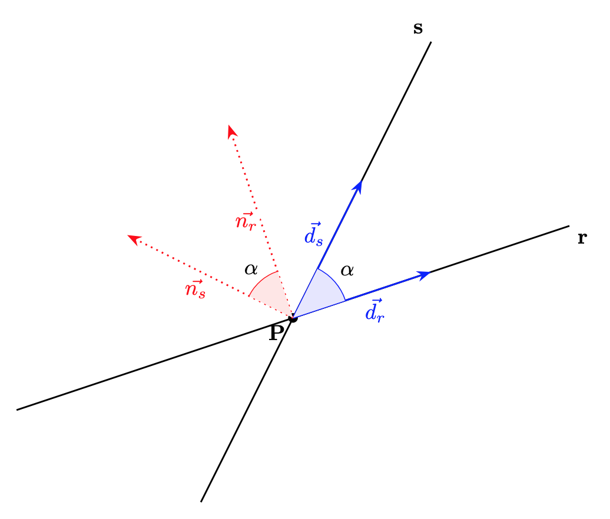
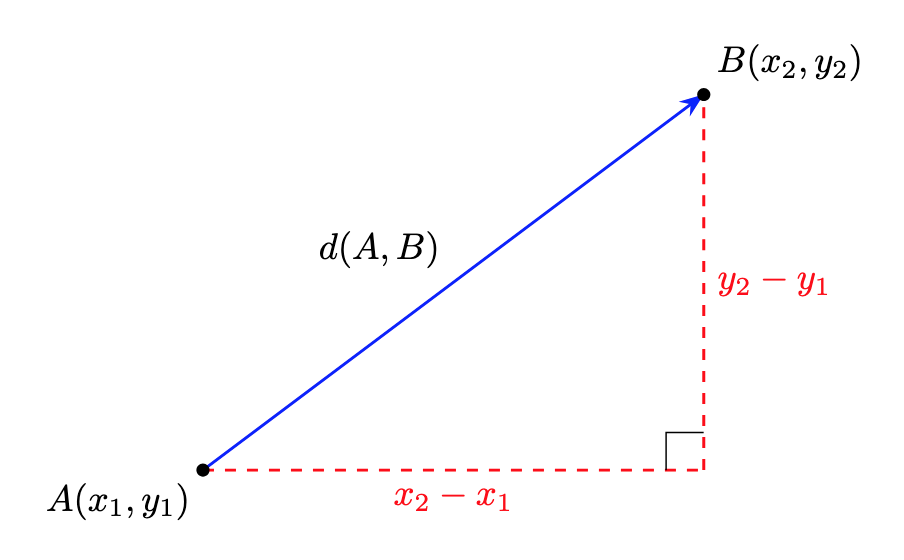
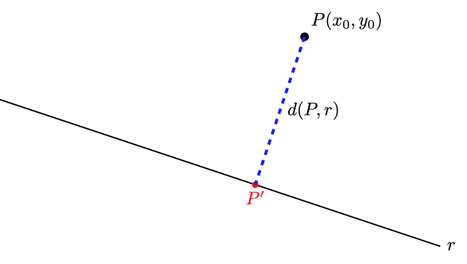

Mètrica al pla
En aquest apartat estudiarem el càlcul de distàncies i angles entre els elements fonamentals del pla: els punts i les rectes.
1. Angle entre dues rectes
L'angle \(\alpha\) que formen dues rectes \(r\) i \(s\) es defineix com l'angle més petit dels dos que determinen en tallar-se. Per tant, \(0 \le \alpha \le 90^\circ\).
A partir dels vectors directors o normals: L'angle entre dues rectes és el mateix que l'angle entre els seus vectors directors (i també entre els seus vectors normals). Per tant, si \(\vec{d_r}\) i \(\vec{d_s}\) són els vectors directors (o \(\vec{n_r}\) i \(\vec{n_s}\) els vectors normals), a partir de la definició del producte escalar tenim:
Observem la relació dels angles entre dues rectes, els seus vectors directors i els seus vectors normals:

A partir dels pendents: Si coneixem els pendents \(m_r\) i \(m_s\) de les rectes:
Exemple: angle entre rectes
Troba l'angle que formen les rectes \(\mathbf{r: 3x - 4y + 2 = 0}\) i \(\mathbf{s: x + 2y - 5 = 0}\).
- Vector normal de \(\mathbf{r}\): \(\vec{d_r} = (4, 3)\)
- Vector normal de \(\mathbf{s}\): \(\vec{d_s} = (-2, 1)\)
- Càlcul:
2. Distància entre dos punts
La distància entre dos punts \(A(x_1, y_1)\) i \(B(x_2, y_2)\) coincideix amb el mòdul del vector \(\overrightarrow{AB}\):
Observem gràficament que aquest càlcul és aplicar el teorema de pitàgores:

Exemple: Distància entre punts
Calcula la distància entre \(A(-2, 3)\) i \(B(4, -1)\):
3. Distància d'un punt a una recta
La distància d'un punt \(P(x_0, y_0)\) a una recta \(r: Ax + By + C = 0\) és la longitud del segment perpendicular a la recta que va pel punt \(P\) a la recta:
Observem gràficament el concepte de distància d'un punt \(P\) a una recta \(r\). Vegem també que, si calculem la intersecció, \(P'\), de la recta perpendicular a \(r\) que passa per \(P\), el problema passa a ser un càlcul de distància entre dos punts (\(d(P,r) = d(P,P')\)):

Exemple: Distància punt-recta
Troba la distància del punt \(P(5, 2)\) a la recta \(r: 3x - 4y + 3 = 0\):
4. Distància entre dues rectes
- Si les rectes són secants o coincidents, la distància és \(0\).
- Si les rectes són paral·leles només cal prendre un punt qualsevol d'una de les rectes i calcular la distància punt-recta d'aquest punt a l'altra recta. Alternativament, si les equacions de les rectes són de la forma, \(r: Ax + By + C = 0\) i \(s: Ax + By + C' = 0\), la distància és la diferència entre els seus termes independents normalitzada:
Exemple
Considerem les rectes \(r: x - 2y + 5 = 0\) i \(s: 2x - 4y - 6 = 0\).
Mètode 1: Distància punt-recta
-
Busquem un punt qualsevol de la recta \(r\):
Si fem \(x = -1\) en \(r\): \(-1 - 2y + 5 = 0 \implies -2y = -4 \implies y = 2\). Tenim el punt \(P(-1, 2)\). -
Calculem la distància de \(P\) a la recta \(s\):
Mètode 2: Fórmula directa (normalitzant coeficients) Primer igualem els coeficients \(A\) i \(B\). Dividim l'equació de \(s\) per \(2\): \(s: x - 2y - 3 = 0\) (ara \(A=1, B=-2, C'=-3\))
Ara apliquem la fórmula \(d(r, s) = \frac{|C' - C|}{\sqrt{A^2 + B^2}}\) amb \(C=5\) i \(C'=-3\):